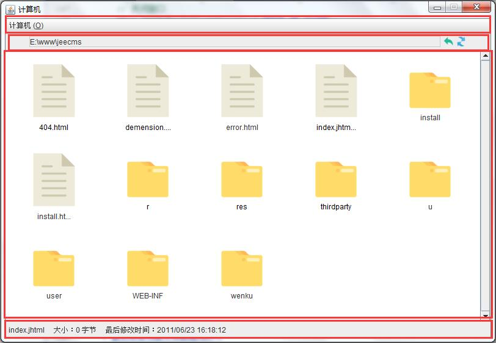

第五十三节 Swing 和简单资源管理器程序简介
一、什么是 Swing
1、 概述
Swing 是一个用于开发 Java 应用程序用户界面的开发工具包。
以抽象窗口工具包（AWT）为基础使跨平台应用程序可以使用任何可插拔的外观风格。Swing 开发人员只用很少的代码就可以利用丰富、灵活的功能和模块化组件来创建优雅的用户界面。工具包中所有的包都是以 swing 作为名称，例如：javax.swing、javax.swing.event
接下来的几节就介绍下使用 Swing 组件开发简单的资源管理器程序
2、 核心组件介绍
| 类 | 简介 |
|---|---|
| javax.swing.JFrame | java.awt.Frame 的扩展版本。 与 Frame 不同，当用户试图关闭窗口时，JFrame 知道如何进行响应。用户关闭窗口时，默认的行为只是简单地隐藏 JFrame。要更改默认的行为，可调用方法： setDefaultCloseOperation(int) |
| javax.swing.JPanel | 轻量级面板容器 |
| javax.swing.JDialog | 创建对话框窗口的主要类。可以使用此类创建自定义的对话框，或者调用 JOptionPane 中的多个类方法来创建各种标准对话框 |
| javax.swing.JScrollPane | 轻量级可滚动的面板容器 |
| javax.swing.JMenu | 菜单 |
| javax.swing.JMenuBar | 菜单栏，可以添加到 JFrame 上面 |
| javax.swing.JMenuItem | 菜单项，需要添加到 Menu 上面 |
| javax.swing.JButton | 按钮 |
| javax.swing.JCheckBox | 复选框是一个可以被选定和取消选定的项，它将其状态显示给用户 |
| javax.swing.JComboBox | 下拉列表 |
| javax.swing.JLabel | 标签 |
| javax.swing.JTextField | JTextField 是一个轻量级组件，允许编辑单行文本 |
| javax.swing.JPasswordField | JPasswordField 是一个轻量级组件，允许编辑单行文本，但不显示原始字符 |
| javax.swing.JTextArea | JTextArea 是一个显示纯文本的多行区域 |
| javax.swing.JFileChooser | 为用户选择文件提供了一种简单的机制 |
| 类 | 简介 |
|---|---|
| javax.swing.JSplitPane | JSplitPane 用于分隔两个（只能两个）Component。 两个 Component 图形化分隔以外观实现为基础，并且这两个 Component 可以由用户交互式调整大小 |
| javax.swing.JTree | |
| javax.swing.JList | 显示对象列表并且允许用户选择一个或多个项的组件 |
| javax.swing.JTable | 用来显示和编辑二维表 |
二、简单资源管理器程序
界面如下：
主要分为4个部分：窗口顶部的菜单栏、显示当前位置和回退刷新按钮的面板、中部主面板、底部状态栏面板，即：

在接下来的几节我们就从这个资源管理器程序入手，逐步了解 java.swing 工具包的核心 API
第五十二节 事件和监听器
第五十四节 Swing 开发简单资源管理器程序（开发界面结构）
加入 QQ 群：5ijy网站开发交流
 ，获取更多源代码和开发环境配置信息。
，获取更多源代码和开发环境配置信息。